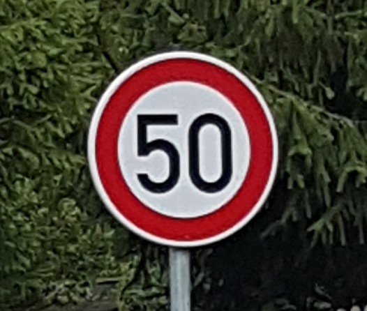

Software | Data | Engineer
Introduction
Welcome to my portfolio website. I graduated from UC Davis with my BS in Civil Engineering and am currently pursuing my MS in Computer Science from Georgia Tech. With experience in software development, machine learning, and analytics, I have a passion for building robust and scalable software systems to solve real-world problems. Feel free to check out my portfolio to learn more about some of my projects and background.
Projects

|
Multivariate Solar ForecastingDeveloped a robust solar forecaster which utilizes machine learning to accurately predict solar energy outputs by evaluating the performance of several regressive machine learning techniques including K-Nearest Neighbor, Deep Learning, Gradient Boosting, and Random Forest. Python
TensorFlow
OpenCV
Pandas
|
|  |
Traffic Sign ClassificationUtilized OpenCV, TensorFlow, and the GTSRB dataset to develop a model capable of classifying traffic signs with 99% accuracy. Python
TensorFlow
OpenCV
Pandas
|
Spotify Top Chart Diagnostic AnalysisDiagnostic analysis of Spotify top chart data to analyze what trends and characteristics makes a song successful. SQL
Tableau
Spotify API
matplotlib
|
Disneyland Sentiment AnalysisSentiment analysis of Disneyland visitor reviews with the goal of comparing satisfaction and identifying problems at three different locations. SQL
Tableau
Python
Pandas
|
Education
|
Georgia Institute of Technology Master of Science, Computer Science In Progress |
|
|
University of California, Davis Bachelor of Science, Civil Engineering Relevant Coursework Probabilistic System Analysis, Spatial Data Analysis, Computational Methods Awards Dean's List, Engineering |
Professional Development
Data Structures and Algorithms Specialization | University of California, San Diego
Introduction to Artificial Intelligence with Python | Harvard Extension
Introduction to Python Programming | Harvard Extension
Google Data Analytics | Coursera
Resume
View Full Resume